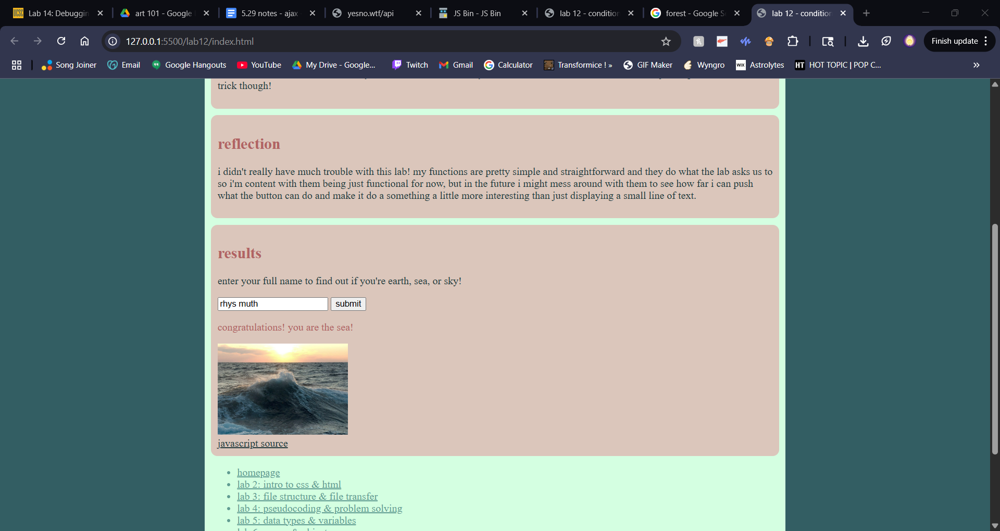

lab 14 - debugging tools & strategies
challenge
for this lab, we were asked to go back over old labs and debug them and/or fix any errors in our code that kept them from working the way we wanted.
problems
this lab was an interesting experience for me, since to be honest i couldn't really find any bugs or errors in my labs?? i've tended to keep working at things until i get them right, so there wasn't really much for me to do in terms of debugging. my biggest struggle was just figuring what i should do for this lab without any bugs to fix.
reflection
since i couldn't find any mistakes or bugs in my previous labs, i ended up just adding a little feature that i originally wanted to put in my conditionals lab but didn't have time to do. i thought this would be better than just doing nothing and calling myself already perfect lol.
results
as you can see below, i went back to lab 12 where we worked with conditionals and added a small feature that i originally wanted to put there in the first place, but didn't end up having time to do. i used a second function by a different name that does the same thing as the original name sorting one, but had it assign an image to correlate with the different results someone could get. then i just used jquery to add it along with the results when the button was clicked! it's a small thing, but i think it adds a lot of flavor!
